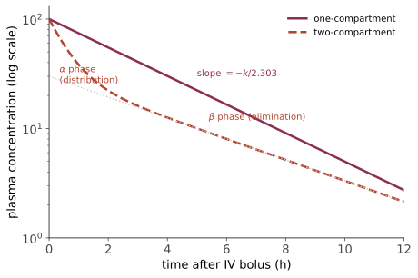
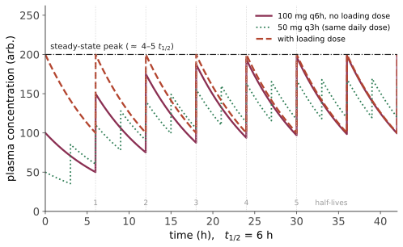

本页目录
药理 I · 药代动力学的定量骨架
药代动力学（PK）= 身体对药物做了什么，药效学（PD，下一页）= 药物对身体做了什么。PK 是一个线性房室系统，几乎所有临床给药规则都能从三个参数推出来：清除率 \(Cl\)、分布容积 \(V_d\)、生物利用度 \(F\)。🔗 数学站常微分方程与 🔗 研究生数学线性系统那两页是本页的数学母体。
1. ADME 四过程
吸收 Absorption → 分布 Distribution → 代谢 Metabolism → 排泄 Excretion。
吸收：口服药需穿过肠上皮，非离子型脂溶分子被动扩散最快。由 Henderson–Hasselbalch，弱酸 \(pK_a\) 与环境 pH 决定离子化比例：
推论：弱酸（阿司匹林 \(pK_a \approx 3.5\)）在胃的酸性环境中大部分非离子化 → 可被吸收；碱化尿液使弱酸在肾小管中离子化 → 不能重吸收 → 加速排出——这正是水杨酸中毒时用碳酸氢钠碱化尿液的机制，是酸碱化学的直接临床应用。
首过效应：口服药经门静脉入肝，部分在到达体循环前被代谢。生物利用度
硝酸甘油首过效应极强 → 舌下含服绕开门脉；利多卡因口服无效 → 只能注射。直肠下段与舌下静脉回流绕过肝，是这条原理的两个解剖出口。
2. 分布容积：一个"虚拟"体积
它不是真实体积，而是"如果药物在全身都是血浆浓度，需要多大体积"。所以：
| \(V_d\)（70 kg） | 提示 | 例 |
|---|---|---|
| ≈ 3–5 L | 局限于血浆（大分子或高蛋白结合） | 华法林、肝素 |
| ≈ 14 L | 分布于细胞外液 | 氨基糖苷类、非去极化肌松药 |
| ≈ 42 L | 全身体水 | 乙醇、锂 |
| ≫ 42 L（可达数百 L） | 大量组织结合（脂溶或与组织蛋白结合） | 地高辛（~500 L）、氯喹、胺碘酮（数千 L） |
\(V_d\) 极大的临床后果：① 透析清不掉（血中只占极小份额，如地高辛）；② 需要负荷剂量；③ 半衰期极长（胺碘酮停药后数月仍有活性）。
蛋白结合：白蛋白结合酸性药、α₁-酸性糖蛋白结合碱性药。只有游离药物有活性。低白蛋白血症（肝病、肾病综合征、危重）→ 游离比例上升 → 同样的总浓度可能已中毒（苯妥英是经典例子，需测游离浓度）。
3. 清除率与消除动力学
总清除率 = 各器官清除率之和（\(Cl = Cl_{\text{肝}} + Cl_{\text{肾}} + \dots\)）。器官清除率满足
\(Q\) 为器官血流，\(E\) 为摄取分数。两个极端值得记：高摄取药物（\(E \to 1\)，如利多卡因、普萘洛尔）受血流限制——心衰时肝血流下降则清除显著下降；低摄取药物（\(E \ll 1\)，如华法林、苯妥英）受酶活与蛋白结合限制——受肝酶诱导/抑制影响大。
一级消除（绝大多数药物）：消除速率正比于浓度。
半衰期：
这个公式是本页最该记住的一条：半衰期不是独立参数，它由 \(V_d\) 与 \(Cl\) 共同决定。所以肾功能下降（\(Cl\) ↓）或分布容积增大（水肿、肥胖）都会延长半衰期。
零级消除（少数但危险）：消除酶饱和，速率恒定。"WEL PAS"——Warfarin（高剂量）、Ethanol、Linezolid、Phenytoin、Aspirin（高剂量）、Salicylates。临床后果：剂量小幅增加 → 血药浓度非线性暴涨。苯妥英与乙醇是最典型的例子——这也是酒精中毒时"再喝一点点"可能致命的药代原因。
其行为服从 Michaelis–Menten：
\(C \ll K_m\) 时近似一级；\(C \gg K_m\) 时退化为零级（恒速）。
4. 单剂量：一室与二室

一室模型静脉推注后：\(C(t) = \dfrac{D}{V_d}e^{-kt}\)。取对数即得直线，斜率给 \(k\)、截距给 \(V_d\)——这是最基础的参数估计方法。
二室：中央室（血浆 + 灌注丰富的器官）与外周室（肌肉、脂肪）。浓度是双指数：\(C(t) = A e^{-\alpha t} + B e^{-\beta t}\)。硫喷妥钠的经典现象：单次诱导后患者数分钟即苏醒，不是因为药被消除，而是因为再分布到肌肉与脂肪；反复给药使外周室饱和后，苏醒时间急剧延长。
5. 多剂量与稳态：临床给药方案的全部依据

稳态浓度（连续输注或反复给药的平均值）：
三条可直接用于临床的推论：
- \(C_{ss}\) 只取决于剂量率与清除率——改变给药间隔而保持日总量不变，平均浓度不变，只改变波动幅度；
- 达到稳态需要 4–5 个 \(t_{1/2}\)（\(1-2^{-n}\)：1 个半衰期 50%、2 个 75%、3 个 87.5%、4 个 93.75%、5 个 96.9%），与剂量无关。同理，停药后清除干净也需 4–5 个半衰期；
- 负荷剂量用于跨过这段等待：
注意这一对公式的分工：负荷剂量只依赖 \(V_d\)（要"装满"身体），维持剂量只依赖 \(Cl\)（要"补上流失"）。所以肾功能不全者需减维持剂量而通常不需减负荷剂量——这是一个经常被弄反、却完全可从公式读出的临床要点。
6. 代谢：I 相、II 相与 CYP
I 相（氧化、还原、水解；主要由 CYP450 完成）→ 生成更极性的代谢物，常仍有活性；II 相（结合：葡萄糖醛酸化、硫酸化、乙酰化、谷胱甘肽结合）→ 通常灭活并利于排泄。
老年人 I 相功能下降更明显，故老年患者优先选择主要经 II 相代谢的药物（如劳拉西泮、奥沙西泮、替马西泮——"LOT"，相对安全）。
CYP 相互作用（临床事故的高发区）：
| 强诱导剂（降低底物浓度） | 强抑制剂（升高底物浓度） |
|---|---|
| 利福平、卡马西平、苯妥英、苯巴比妥、圣约翰草、慢性乙醇 | 唑类抗真菌、大环内酯（红霉素、克拉霉素）、蛋白酶抑制剂（利托那韦）、胺碘酮、西咪替丁、葡萄柚汁、急性乙醇 |
两个必须记住的具体后果：利福平使口服避孕药失效；唑类 + 他汀 → 横纹肌溶解风险显著升高。
前药需代谢激活：氯吡格雷经 CYP2C19 激活——CYP2C19 慢代谢者疗效差（这是药物基因组学最成熟的例子之一，见第 24 页）；可待因经 CYP2D6 转为吗啡——超快代谢者可发生致命呼吸抑制，这是它在儿童与哺乳期禁用的原因。
对乙酰氨基酚的毒性通路值得单独讲：常规剂量下主要经葡萄糖醛酸化与硫酸化（II 相）安全排出，少量经 CYP2E1 生成毒性中间体 NAPQI，被谷胱甘肽中和。过量时 II 相饱和 → NAPQI 大量生成 → 谷胱甘肽耗竭 → 肝小叶中心坏死。解毒剂 N-乙酰半胱氨酸补充谷胱甘肽前体，且越早越有效。慢性饮酒诱导 CYP2E1 且耗竭谷胱甘肽 → 中毒阈值下降——机制完全解释了临床剂量建议。
7. 排泄与肾功能调整
肾排泄 = 肾小球滤过（仅游离药）+ 肾小管分泌（主动，有竞争）− 重吸收（受尿 pH 影响）。
分泌竞争的经典例子：丙磺舒竞争性抑制青霉素的近端小管分泌 → 延长青霉素作用（历史上青霉素稀缺时的省药手段）；同理它抑制尿酸分泌 → 促尿酸排泄治痛风。
肾功能不全的剂量调整用 Cockcroft–Gault 估算肌酐清除率：
注意其前提：稳态肌酐、肌肉量正常。急性肾损伤时肌酐尚未升高，公式会严重高估肾功能；肌少的老年人与恶病质患者也会被高估——这是临床上过量给药的常见来源。
治疗窗窄、必须做治疗药物监测（TDM）的药：地高辛、锂、苯妥英、茶碱、氨基糖苷类、万古霉素、他克莫司、华法林（测 INR 而非浓度）。记住这份名单的实际意义：它们的中毒剂量与治疗剂量重叠。
8. 特殊人群
老年：\(V_d\) 改变（体水↓、脂肪↑ → 脂溶药半衰期延长）、白蛋白↓、肝肾功能↓、受体敏感性改变（对苯二氮䓬与抗胆碱药更敏感）。Beers 标准列出老年应避免的药物（抗胆碱药、长效苯二氮䓬、部分 NSAIDs）。
妊娠：血容量↑（\(V_d\) ↑）、GFR ↑（清除加快）、胎盘转运（脂溶、非离子化、低分子量易过）。致畸窗口在器官发生期（受孕后 3–8 周）最敏感。已知致畸药：ACEI/ARB（胎儿肾发育异常）、华法林、异维 A 酸、丙戊酸、甲氨蝶呤、四环素、沙利度胺。FDA 已废弃 A/B/C/D/X 字母分级，改为叙述性的 PLLR 标签——旧字母分级仍在中文资料中流传，属于过期知识。
儿童：不是"缩小的成人"——新生儿肝酶不成熟（灰婴综合征：氯霉素葡萄糖醛酸化不足）、血脑屏障未完善、体表面积/体重比高。
基因多态性：CYP2D6（可待因、他莫昔芬、多种抗抑郁药）、CYP2C19（氯吡格雷、PPI）、TPMT/NUDT15（硫唑嘌呤致命性骨髓抑制，用药前应检测）、HLA-B*5701（阿巴卡韦超敏）、HLA-B*1502（卡马西平致 Stevens–Johnson 综合征，在亚裔中显著富集，用药前应筛查）。最后两项是"药物基因组学已进入常规临床"的确凿例子。
下一页：药效学——受体理论、量效曲线与治疗窗，把"多大剂量产生多大效应"讲成一条可计算的关系。